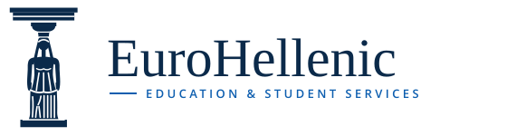
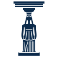
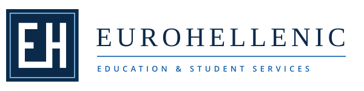
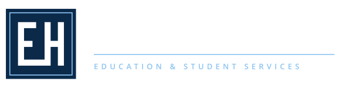
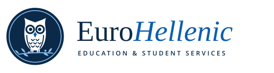

The Caryatid
One of the six Korai from the Erechtheion porch: a draped young woman carrying the capital and entablature on her head. Her weight-bearing leg falls in straight folds like the fluting of a column, and the drapery breaks round the bent knee of the other leg. The mark keeps the idea behind the current column logo, and the column becomes a person. That fits a service that supports students.

Lockup on white
Lockup on navy (reversed file)

Meander Monogram
An E and an H drawn as one unbroken Greek-key line, with the base of the E running straight into the stem of the H. The line sits in a square seal with a pale Aegean keyline. This is the most institutional and typographic route. It is the strongest at favicon and app-icon sizes, and it pairs with a spaced capital wordmark.

Lockup on white

Lockup on navy (reversed file)
Owl of Athena
The owl from the Athenian silver tetradrachm, a symbol of wisdom and of Athens. It sits on an olive branch inside a coin-like roundel, and its breast feathers are drawn as stacked chevrons, as on the ancient coin. This is the warmest and most approachable direction for 18-year-old applicants. The risk is that owls are common in education branding.

Lockup on white
Lockup on navy (reversed file)
Laurel & Book
An open book inside a victor's laurel wreath tied with a ribbon. It says "education, achievement, Greece" at once, and the two-tone blue gives it a crest-like formality without a shield. It is the most literal of the four and the easiest to understand. It is also the most generic, because many schools and academies use a wreath and a book.
Lockup on white
Lockup on navy (reversed file)
Recommendation
Go with the Caryatid, and use the monogram as its small-size partner
The Caryatid is the most distinctive and most ownable of the four. It is unmistakably Athenian rather than generically "classical". It carries on the column the site already uses, so the change feels like an evolution, and it tells a human story: the figure holds the structure up, as an advisor supports a student. It also suits the site's editorial, photograph-led look better than a badge does.
Its weakness is its size. The figure is tall and narrow, so at 32 px it reads only as a small column-like silhouette. For the favicon, app icon and social avatar I would pair it with Concept 02, the Meander Monogram, which stays crisp at 16 to 32 px. The owl and the laurel-and-book are pleasant, but both sit close to what many other education brands already use.
Technical notes: wordmarks are live <text> set in "Playfair Display, Georgia, serif". SVGs loaded with <img> cannot load web fonts, so they fall back to Georgia unless Playfair is installed. Convert the text to outlines before final production. Every lockup has a -reversed file for dark backgrounds, and the transparent marks (01 and 04) also have -mark-reversed files.